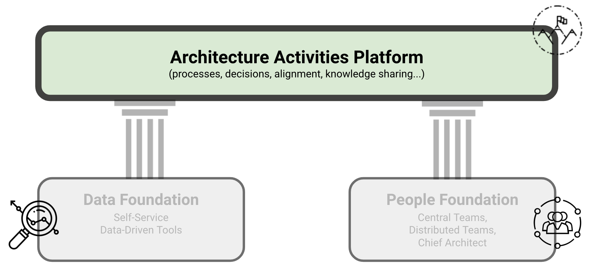
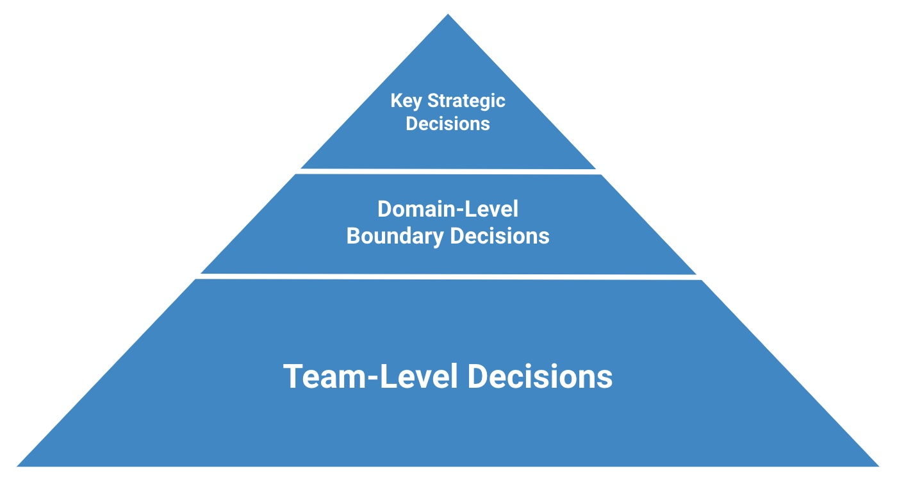

Architecture Activities Platform
KEY POINTS:
- The Architecture Activities Platform is the place where, by leveraging data and people pillars, we performed activities that help an organization to reach it goals.
- Some examples include: supporting teams in their daily work; tracking tech debt, defining tech debt reduction programs; performing technical due diligence; standardization of processes and documentation; defining cloud, data, and platform strategies.
Each organization will have different architectural needs and contexts. When forming architecture functions, I use as a starting point these two pieces of advice from Gregor Hohpe:
- “Your architecture team’s job is to solve your biggest problems. The best setup is the one that allows it to accomplish that.”
- “Your organization has to earn its way to an effective architecture function. You can’t just plug some architects into the current mess and expect it to solve all your problems.”

Considering the previous two points from Gregor Hohpe, each organization must find activities and operating models to enable architecture to work on the most critical problems.
The Architecture Activities Platform is where we have to perform activities that help an organization reach its goals. In all of these activities, data and people pillars provide foundations for data-informed decision-making well-embedded in the organization.
Examples of Architecture Activities
Here are some examples of activities I have been performing with architects:
- Design mechanisms for teams to make better decisions. This includes creating global decision-support mechanisms, such as advisory forums, formal design authority (for compliance-sensitive projects), and team-specific mechanisms, such as escalation paths in case of decision conflicts (e.g., teams cannot align on a common messaging middleware).
- Supporting teams in their daily work. Being part of key team activities, aligning architectural work with team rituals to provide timely support, and supporting the team in all crucial phases of their work (e.g., reviewing architecture proposals early before the project or sprint start).
- Supporting planned new initiatives and projects. Ensuring alignment between projects that require multi-team collaboration.
- Supporting teams in dealing with the legacy landscape. Providing data and knowledge regarding legacy landscape, identifying hotspots (e.g., frequently changed, low-quality untested pieces of legacy code), defining scenarios and roadmap for legacy modernization.
- Tracking tech debt, defining tech debt reduction programs. Defining a centrally aligned backlog of technology depth, defining programs for its reduction and integration in planning processes.
- Performing SWOT and other analyses of platforms and systems. Doing deep dives to better understand some areas of the technology landscape and create plans and roadmaps for improvement.
- Standardization of processes and documentation. Defining common templates for documents such as Architectural Decision Records (ADRs), Technical Design Reviews (TDRs), or common diagrams.
- Supporting merger and acquisitions (M&A) activities with expertise and analyses. Support analyses, recommendations, and integration planning regarding mergers and acquisitions.
- Defining key technology strategies. Examples include Cloud, Data, and Platform strategies.
- Defining vision and direction of technology, frequently collaborating with Engineering Leaders. Working with managers to create a sustainable organizational setting aligned with technology strategies.
Operating Model
While exact activities and their scope will depend on an organization setting and will change over time, in daily work, we aimed to implement the common operational model.
Inspired by Gregor Hohpe’s strategy-principles-decisions model Figure 1 illustrates the process.
Figure 1: A common operating model I typically use for Grounded Architecture activities.
A common operating model I typically use for Grounded Architecture activities is as follows:
- Architects engage with stakeholders and product and project teams in a collaborative and supportive manner.
- Architects are empowering the teams so that they make most of the decisions.
- In all activities, the architecture function and architects:
- Bring relevant data to inform decisions leveraging the Data Pillar.
- Define decision boundaries to enable the minimal level of compatibility and strategic alignment (e.g., public cloud provider, tech stack constraints).
- Define key principles to facilitate consistency in decision-making.
- Share and generalize lessons learned.
- Architects then spend their time in constant motion between supporting teams’ daily work and working on strategic topics, helping the organization achieve alignment between strategy and implementation.
Distributing Decisions
With proposed operating model, I aimed to keep architectural decision-making distributed across the organization and embedded in the development teams. Development teams traditionally have the best insights and most information relevant for making a decision.
As noted by Gregor Hohpe, the worst case of organizational decision-making happens when people with relevant information are not allowed to make decisions, while people who lack sufficient information make all decisions. Grounded architecture aims to make relevant information more readily available to a broader audience and better connect people when making decisions.
Autonomy and Alignment
While I aim to create a mechanism to give teams autonomy, autonomy does not mean that teams are alone and do not align with anyone, do not get feedback from anyone, and do whatever they want. Autonomy needs to be complemented with high transparency and proactivity in alignment with other teams.
I have sometimes implemented the concept of a decision pyramid to give maximal autonomy to the teams while maintaining a minimal level of global alignment and compatibility (Figure 1).
 Figure 1: A decision pyramid. Most of decisions should be made by the development teams. However, several strategic and domain-level decisions may provide a decision boundaries for teams (e.g., cloud provider).
Development teams should make most of the decisions. However, several strategic and domain-level choices may provide team decision boundaries. For example, selecting the public cloud provider is typically a CTO-level strategic decision. Similarly, domain engineering leaders may want to limit some choices, such as the number of programming languages, to more easily train new people, maintain code, and support moves between teams.
Structure ← People Pillar |
Structure Value of Grounded Architecture → |